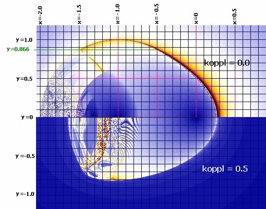
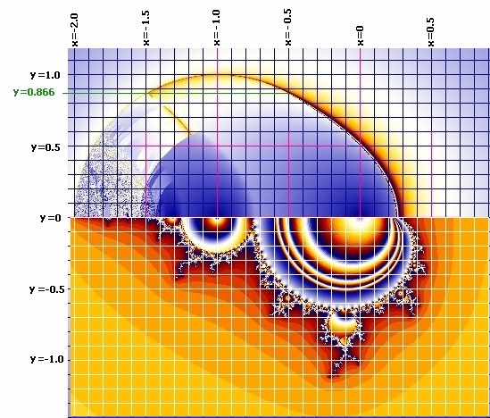
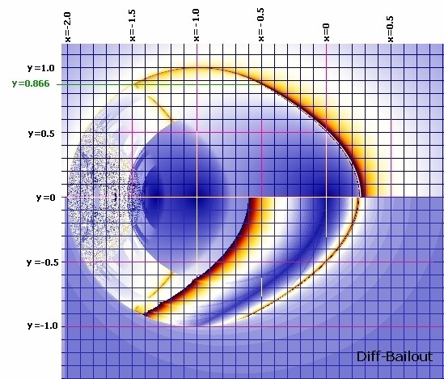

Iterationsverfolgung
Auge Z = Z•(Z*) + C
mit Z = x + iy und Z* = x - iy und
C als Punkte der Bildebene, Start: x=0, y=0

Hinweis: Dieses Bild ist nur fr Koppelfaktor = 0.0 und 0.5
Hier ein Vergleich mit dem Apfelmnnchen Z = Z^2 + C (koppl=0).
Die Zweier-Zyklen liegen im mittleren Blau, die Viererzyklen im Dunkelblau, genau wie beim Apfelmnnchen.

Zur Iterationsverfolgung fr Apfelmnnchen
Hier noch ein Differenzbild (Abbruch bei kleinen Differenzen am Punkt) zum Vergleich (koppl=0):

weitere Bilder